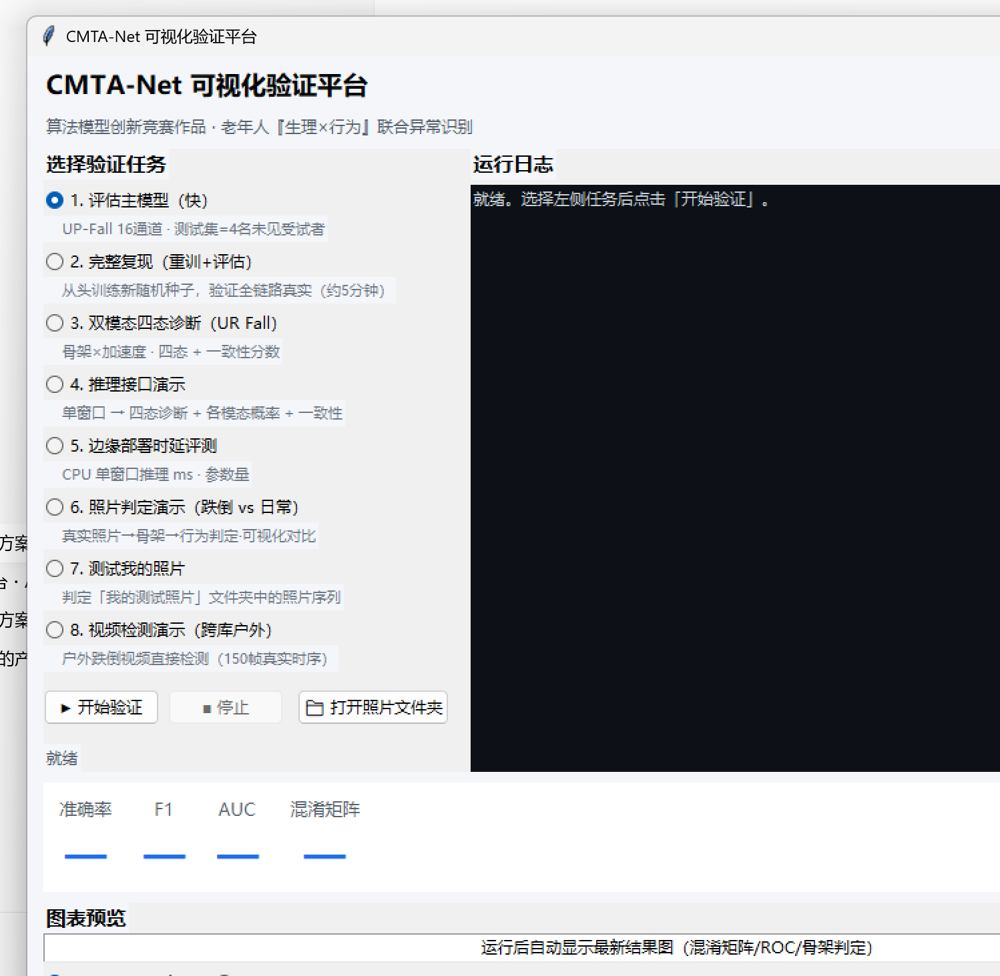
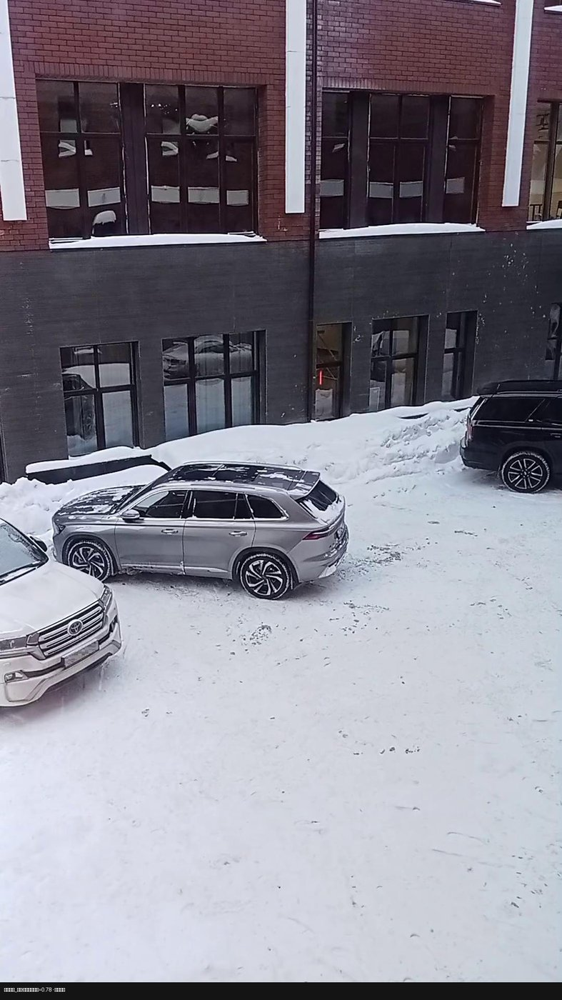
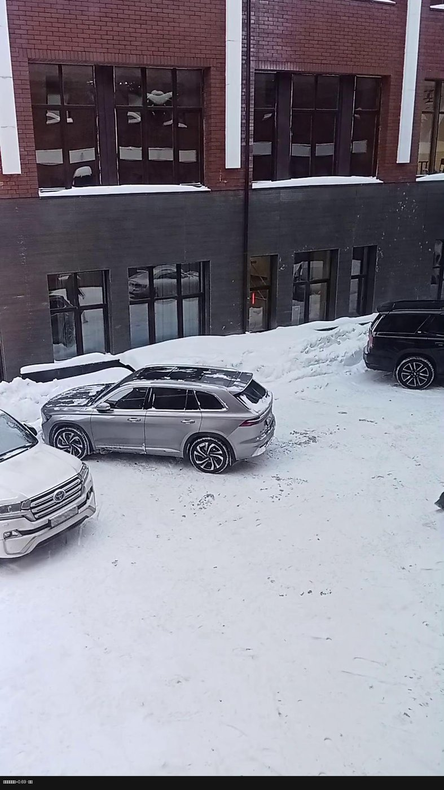

算法模型创新赛道 · 竞赛作品
CMTA-Net
本地一键启动的可视化验证界面：8 项验证任务、实时日志、指标卡片与结果图预览
CMTA-Net
跨模态时空注意力融合网络
面向独居老人监护场景，联合可穿戴生理信号与视频骨架行为双模态，完成跌倒与异常行为的实时识别，全程可解释可视化验证。
0.9500
测试集 F1（4名未见受试者）
0.9372 ± 0.011
三随机种子均值 F1
0.9842 ± 0.002
ROC AUC

八项验证任务，一次点击
从端到端评估到可解释推理演示，覆盖"训练 → 评估 → 诊断 → 推理 → 部署 → 演示"全链路
01
评估主模型（快）
UP-Fall 16 通道传感流 · 测试集 = 4 名未见受试者，加载已训练模型直接评估
02
完整复现（重训 + 评估）
从头训练新随机种子，验证全链路真实可复现（约 5 分钟）
03
双模态四态诊断（UR Fall）
视频骨架 × 加速度传感 · 四态 + 模态一致性分数
04
推理接口演示
单窗口 → 四态诊断 + 各模态概率 + 一致性输出
05
边缘部署时延评测
CPU 单窗口推理毫秒级 · 参数量统计
06
照片判定演示（跌倒 vs 日常）
真实照片 → YOLOv8-Pose 骨架 → 行为判定 · 可视化对比
07
测试我的照片
判定「我的测试照片」文件夹 · 子文件夹 = 一组，一次全测
08
视频检测演示（跨库户外）
户外跌倒视频直接检测 · 150 帧真实时序（实测 0.78 / 0.84 检出）
可解释判定效果
骨架可视化让模型"看得见"：姿态关键点、行为异常概率与四态诊断逐帧呈现

户外雪地跌倒视频，150 帧真实时序 → 行为异常概率 0.78，判定异常并告警

子文件夹 = 一组，批量判定户外跌倒 / 趴地 / 日常活动三组照片
快速开始
模型、代码、数据集引用规范均已开源在 GitHub 仓库
# 方式一：Windows 双击入口 启动可视化界面.bat # 自动打开图形界面（任务 01-08） # 方式二：命令行 python gui_verify.py # 图形验证平台 python photo_demo.py -d 我的测试照片 # 多组照片判定 python photo_demo.py --video 视频.mp4 # 视频直接检测（150帧，最可靠） python evaluate.py --checkpoint checkpoints/best_upfall_v2h.pt --dataset upfall --stream physio --split test # 依赖环境：Python 3.13 · PyTorch · ultralytics(YOLOv8-Pose) · 全程 CPU 可运行
数据主线（全部开源可复现）
四套公开数据集构成"传感 × 行为"双模态证据链，训练/验证/测试按受试者严格划分防泄漏
| 数据集 | 内容 | 在本作品中的角色 |
|---|---|---|
| UP-Fall | 17 人、11 类活动（5 跌倒 + 6 日常），EEG + 5 处穿戴 IMU + 红外 | 传感流规模训练（按人 6:2:2） |
| UR Fall | 70 段（30 跌倒 + 40 日常）视频 + 配对加速度 CSV | 双模态联合主阵地（视频→骨架 × 传感） |
| 老年腕戴 | 41 名真实老人，984 段，三轴加速度 + 1Hz 真实心率 | 真实老人数据（含 HR），可分性挑战样本 |
| PPG-DaLiA（镜像） | 495 万条 8 秒 PPG 窗口，心率回归标签 | PPG → 心率附加素材 |